YORON BBQ ACADEMY
おいしさは、温度と配置でできている。
私たちはWeber Grill Academyの初級・中級・上級コースを実際に受講し、毎回の実践と失敗を記録し続けてきました。このページは、その記録をまるごと体系化したものです。勘と経験ではなく、数字とロジックで——誰でも「あの店より美味しい」に届きます。
LESSON 1 — FIRE LAYOUT
BBQは火力勝負ではない。
「火の配置設計」だ。
初級コースの最初に教わる、すべての土台。炭を「どれだけ熾すか」ではなく「どこに置くか」で、料理は決まります。
ツーゾーンファイヤー
炭を片側に寄せて、強火ゾーン（炭あり）と弱火ゾーン（炭なし）をつくる。基本はこれだけでOK。焼き付けは強火側、火入れは間接側——「外は真っ黒・中は生」からの卒業は、このレイアウトひとつで実現します。
スリーゾーン／スプリットツーゾーン
- スリーゾーン：炭で坂をつくり、強火／中火／弱火。複数食材を焼き分けたいとき用。
- スプリットツーゾーン：両端に炭・中央は空けて「中火／弱火／中火」。食材を行き来させる前提の設計。大型ガスグリルなら「両サイド点火・中央消火」で同じ形がつくれます。
焼けない原因の9割は「余熱不足」。
「焼けない＝火力が足りない」ではありません。ほとんどは余熱が足りていないだけ。ガスグリルは10分以上の予熱が必須です。そして炭は動かさない——温度調整は上下の通気口で行います。
4つのT と、最後の原則。
- 判断軸は Time・Temperature・Tool・Technique。
- 焼けない → 余熱不足。
- 焦げる → ダイレクト（直火）に寄りすぎ。
- 迷う → インダイレクトへ退避。20分以上かかる食材は最初からインダイレクトで。
LESSON 2 — TEMPERATURE
「見た目」より、数字を信じる。
中心温度計を、真ん中の一番厚いところへ。焼き時間ではなく「中心温度」で判断するのが、失敗しない唯一のコツです。温度計は1本1,500円ほど——YORON BBQ最強の道具です。
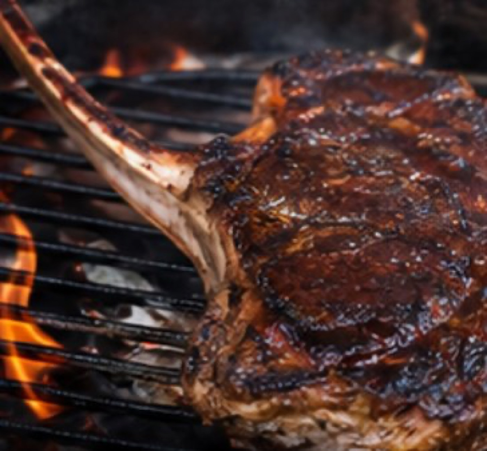
牛肉
ミディアムレアの入口。ローストビーフはレア52〜54℃、ミディアム56〜58℃。焼き付けは280℃の高温で。
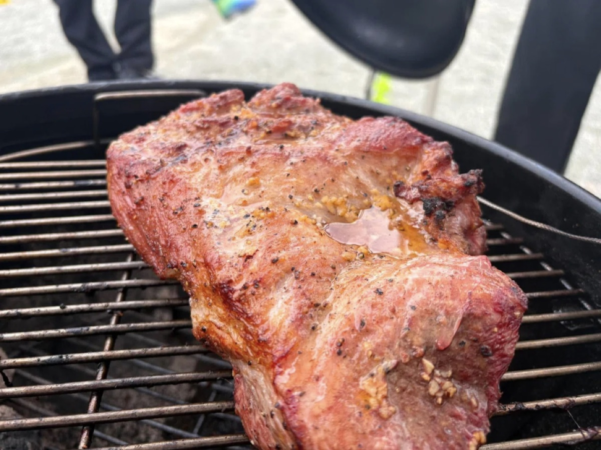
豚肉
「豚はしっかり」の常識を更新。63℃でしっとり桜色に。スーパーのひき肉は63℃、精肉店のミンチは53℃と、同じ豚でも変わります。
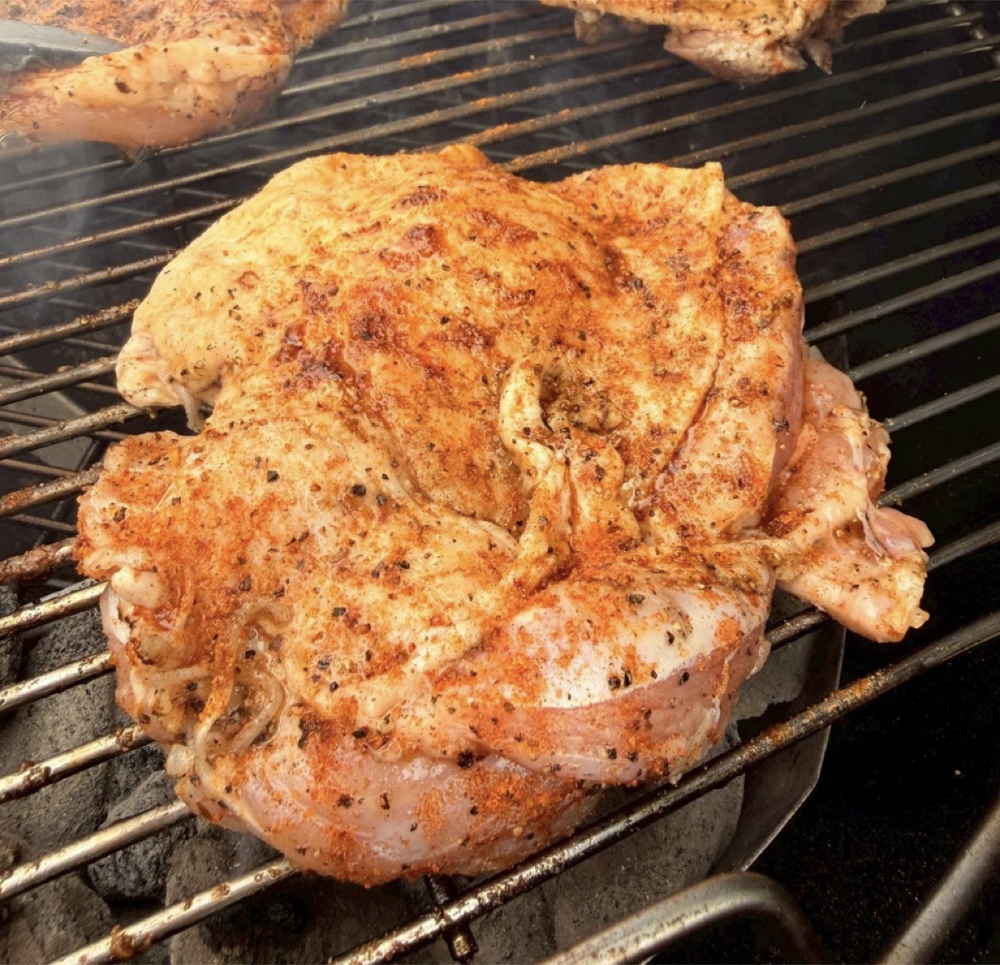
鶏肉
安全第一の食材で、3種の中でいちばん高い温度が必要。もも肉は骨のきわで測るのがポイント。
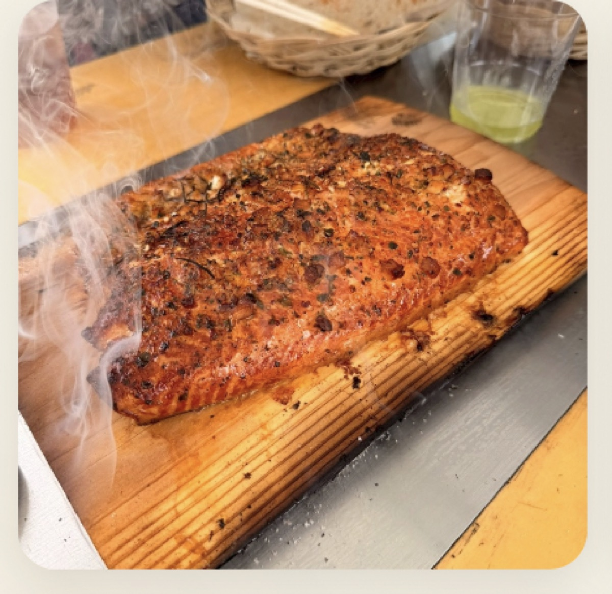
サーモン
養殖サーモンなら53℃でとろける火入れに。天然の鮭はアニサキス対策で75℃まで——魚は種類と養殖/天然で温度が変わります。
| グリル内温度 | 用途 |
|---|---|
| 110〜150℃ | ロー&スロー。塊肉をじっくり育てる温度帯（理想は120〜125℃）。スペアリブ約5時間、プルドポーク約8時間、ブリスケット約15時間。 |
| 200〜250℃ | 基本のグリル温度。ほとんどの料理はここ。チキン、野菜、椎茸の肉詰め、ピザ、アップルパイまで。 |
| 280℃ | ステーキの焼き付け。厚さ1cmあたり1分、2cmなら片面2分半×2。網に対して45度に置き、軽く押す。 |
80℃の壁 — コラーゲンの科学。
肉は70〜80℃では硬いまま。しかし80℃を超えるとコラーゲンがゼラチン化します——角煮と同じ原理です。だから完成温度は、スペアリブ92〜94℃、プルドポーク97℃（手でほぐれる）。ロー&スローの本質は、このコラーゲン理解にあります。
蓋を開けるたび、火入れはやり直しになる。
温度が上がらない一番の原因は「蓋を開けすぎ」。見たくなったら温度計を見る。レストタイム（休ませ）は焼いた時間の1/3——肉汁が落ち着いてから切ります。カットはフォークではなくスプーンで、豚肩ロースは斜め切り。
LESSON 3 — CEDAR PLANK / RACK / SHIELD
杉板・ラック・シールド。
3つの道具で、失敗が消える。
「網で焼くと失敗しそうな食材は、まず杉板に乗せる」——それだけ覚えれば大丈夫。ここから先は、使いこなすための体系です。
香りを足す板。役割は3つ。
- 🔥 直火から守る（焦げ防止）
- 🌲 ほんのり木の香りを移す
- 💧 水分を保ちながら蒸し焼きにする
使う前に30分以上、水に浸すのが鉄則。ツルツル面を下にして火にかけ、パチッと音がしたら食材を乗せます。サーモンのほか、タラ・スズキ・マスなど崩れやすい魚、しっとりさせたい鶏むね、カマンベールチーズ（蜂蜜がけで優勝）、アスパラやナスの蒸し焼きにも。牛ステーキなど焼き色が命の食材には不向きです。
2〜3回は再利用可能。使用後は焦げを軽く削り、洗剤を使わず水洗いして完全乾燥。黒く炭化してきたら寿命です。
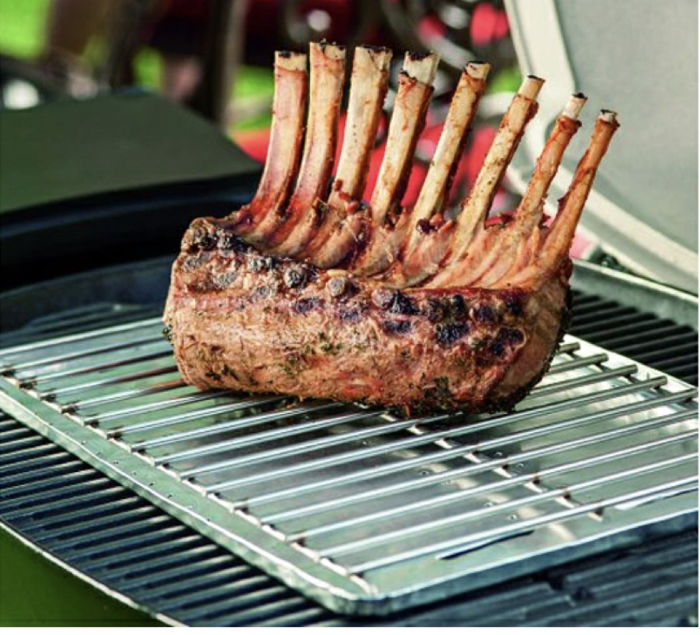
ラック & シールド浮かせる台と、火を遮る板。
- ロースティングラック＝食材を網から浮かせ、下からも熱を回す台。皮・底面をベチャっとさせない。鶏ももの皮パリ、塊肉、野菜の焼きすぎ防止に。
- ロースティングシールド＝直火を遮る板。インダイレクトを強制的につくり、脂落ちによる炎上を防ぐ。塊肉・鶏丸焼き・20分以上火を入れるもの・脂の多い肉に。
判断基準はシンプルに——「焼く」より「火を通す」時間が長いならシールド、「焦がしたくない・均一に火を入れたい」ならラック。豚肩ロースの厚切りなら「ラックに乗せ、下にシールド」で、焦がさず63℃まで運べます。
長時間かかるものは「ラック＋シールド」。魚はまず杉板。この3行で現場の9割は判断できます。
LESSON 4 — CHEAT SHEET
料理別・温度と時間の早見表。
受講記録から起こした実践早見表。当日はこの表と中心温度計だけで戦えます。
| 料理 | 道具 | グリル温度 | 時間の目安 | 完成の判断 |
|---|---|---|---|---|
| 杉板サーモン | 杉板◎ | 200〜230℃・間接 | 8〜12分 | 中心53℃。表面が白くなり、押すとふっくら |
| 白身魚（タラ・スズキ） | 杉板◎ | 200〜220℃ | 10〜15分 | 崩れ防止が最優先。塩＋油だけで十分 |
| 鶏むね（しっとり） | ラック◎ | 200〜220℃→最後だけ直火 | 20〜25分 | 中心73℃ |
| 鶏もも（皮パリ） | ラック◎ | 火入れ220℃／皮260〜280℃ | 15〜20分＋皮2〜3分 | 中心73℃。骨のきわで測る |
| 豚肩ロース（厚切り） | ラック◎＋シールド◎ | 200〜220℃・完全間接 | 25〜40分 | 中心63℃→最後に直火1〜2分で焼き色 |
| 豚ロースステーキ | 網のみ | 280℃ | 2cm厚＝片面2分半×2 | 中心63℃→焼いた時間の1/3休ませる |
| ローストビーフ | ラック◎＋シールド◎ | 180〜200℃ | 40〜60分 | レア52〜54℃／ミディアム56〜58℃ |
| スペアリブ（ロー&スロー） | 間接・膜は剥がす | 125℃ | 2〜3時間→アルミ包み→再加熱 | 63℃で一度取り出し、92〜94℃で完成 |
| プルドポーク | 間接 | 120〜125℃ | 3〜4時間×2（計8時間以上） | 中心97℃。手でほぐれたら完成 |
| 野菜（バスケット） | バスケット | 230℃ | 3分×3回（2回返す） | 水分が抜けて甘くなり、焼き色＝完成 |
| ピザ | ピザストーン（10分以上予熱） | 約250℃ | 約10分 | ストーンの予熱が命。バジルは手で叩いて香りを立てる |
| デザート（ブレッドプディング） | 耐熱容器 | 250℃→200℃ | 20分→マシュマロ2分 | 爪楊枝に水分がつかなければOK |
※スモーク（香りづけ）を入れられるのは肉が60〜70℃になるまで。燻製（保存目的）とスモークは別物です。竹串は使用30分前に水に浸すと燃えにくくなります（2回ほど再利用可）。
LESSON 5 — HEAT SOURCE
炭・ガス・電気。熱源に、優劣はない。
大事なのは熱源の種類より「蓋と間接熱のロジック」。それぞれの得意分野を知って、場所と暮らしに合うものを選びましょう。
| 熱源 | 特徴 | 向いている場面 |
|---|---|---|
| 炭 | 遠赤外線はガスの約4倍。味は一番出るが、温度管理には慣れが必要。良い状態の炭は「白く、透明感のある灰をまとった状態」。炭初心者は完璧を目指さない。 | 週末のBBQ場・キャンプ。「火を育てる時間」ごと楽しみたい日。 |
| ガス | 安定・再現性が高く、失敗しにくいのはガス。ただし10分以上の予熱が必須。グリル付属の温度計より、プローブ（挿し込み式温度計）の実測を信じること。 | 自宅の庭・ベランダ運用や、料理に集中したいとき。 |
| 電気 | 最大310℃まで出て、温度コントロールは最強。煙が最も少なく、火気制限のある場所でも使える。ロー&スローの実施例もあり。 | マンションのバルコニー・屋内イベント。「BBQを日常にする」入口。 |
炭は「何でも良い」わけではない。
- 木炭：火がつきやすく扱いやすい。初心者向き。
- 備長炭：火がつきにくいが、一度つくと消えにくく火力が安定。
- 整形炭（ブリケット）：BBQ用に最適化。1回で約3時間安定燃焼。綺麗に並べると火がゆっくり均一につく——ロー&スローの主戦力。
料理のスタイル（時間・温度）に合わせて炭を選ぶ。それがWeber流の前提です。
燻製とスモークは、別物。
燻製は水分を飛ばして保存するための技術。スモークは香りづけです。ウッドチップをグリルに入れるだけでスモーク香がつき、低温長時間の火入れでは断面がピンク色になる「スモークリング」が現れます。煙を出したいときは、温度を下げるのがコツ。
LESSON 6 — OIL & SEASONING
油は網ではなく、食材に塗る。
味付けにも、はっきりしたルールがあります。
焼く直前に、薄く、均一に。
油は❌網に塗るのではなく、⭕食材に塗る。目的は食材の水分をコーティングして乾燥を防ぐこと——ナスがパリパリにならないのはオイルのおかげです。エクストラバージンは煙点が低いので、加熱にはピュアオリーブオイルを。食材は大きめに切るほど柔らかく仕上がり、ピーマンやエリンギは切らずにそのまま焼くのが正解。
スパイスは擦り込む。塩味は塩でつくる。
BBQスパイスはタレではなくRub（擦り込み）。焼く30分前に擦り込むと、塩が肉の水分と結びついて密着し、低温長時間の火入れで香ばしい外皮「バーク」に育ちます。マリネなら理想は一晩——ケイジャンスパイス＋おろしニンニク＋レモン果汁＋オイルの鶏レッグは、アカデミー参加者の心を一撃で掴んだ味です。
コンパウンドバターを覚えておく。
バター＋メープルシロップ＋ローズマリー＋ゴールデンマスタード。焼き上がりに乗せるだけで、ステーキが一段化けます。サーモンなら「はちみつ×マスタード」、バナナグリルなら「ラム酒＋はちみつ」——仕上げの一手を数パターン持っておくと、食卓の景色が変わります。
万能スパイスの「同じ味」を超える。
日本は万能スパイスが大衆化しすぎて、誰がどこで焼いても同じ味になりがち。オーストラリアのコンペティションで磨かれたプレミアム・ラブを1本手に入れた瞬間から、あなたの創作が始まります。SHOP（BBQラブ通販）↗
LESSON 7 — THE COURSE, BEGINNER TO ADVANCED
初級から上級へ。
私たちが実際に歩いた道。
2025年12月の初級コースから2026年4月の上級コースまで、Weber Grill Academyで学び、記録してきた内容のダイジェストです。新しく仲間になる方は、この順番で身につけていくのがおすすめです。
火の配置と、数字の基本。
- BBQは火力勝負ではなく「火の配置設計」。ツーゾーンが基本形。
- 焼けない原因の9割は余熱不足。炭は動かさず通気口で調整。
- 中心温度：牛53℃・豚63℃・鶏73℃・サーモン53℃。見た目より数字。
- 油は食材に。スパイスはRub。塩味は塩でつくる。
- 杉板は30分浸水、ツルツル面を下に。パチッと音がしたらサーモンを乗せる。
- ステーキは280℃・1cm1分・45度置き。レストは焼き時間の1/3。
- 迷ったら4つのT——Time・Temperature・Tool・Technique。
炭とコラーゲンの科学。
- 炭は料理で選ぶ：木炭／備長炭／ブリケット（約3時間安定燃焼）。
- ロー&スローは110〜150℃（理想120〜125℃）。塊肉は「見守る料理」。
- 80℃超でコラーゲンがゼラチン化。スペアリブ92〜94℃、プルドポーク97℃。
- スペアリブは裏の膜（マク）を必ず剥がし、63℃でアルミ包み→再加熱。
- 椎茸の肉詰め：豚ミンチ＋大葉、間接200〜250℃で10分・63℃。8個約500円で前菜の主役に。
- ハンバーガーの黄金比は赤身7：脂身3。パティはこねない。チーズは最後30秒。
- ピザはピザストーンを10分以上予熱。市販生地で250℃・10分。デザートピザまで無限。
創作と、素材を変える技。
- ビア缶チキン：醤油・オイスターソース・みりん・ビールに1日漬け込み。炭酸の気泡が繊維に味を運ぶ。15分ごとにタレを塗り重ねる。
- バックリブ（背中側・淡白）はラブを裏側から。骨が浮き出たら完成の合図。
- サーモンの核心はドリップ処理。キッチンペーパーで拭き切るだけで仕上がりが変わる。はちみつ×マスタードで約10分。
- ポテトグラタン：生クリーム200cc＋パルメザン100g、間接30分。明太子アレンジも◎。
- バナナグリル：皮ごと3分→ラム酒＋はちみつでアルコールを飛ばす。
- 総括：炭酸・アルコール・水分管理が肉質を変える。ロー&スローの本質はコラーゲン理解。
MADE BY US — 作ってきたもの
これ、ぜんぶ受講と実践の記録です。
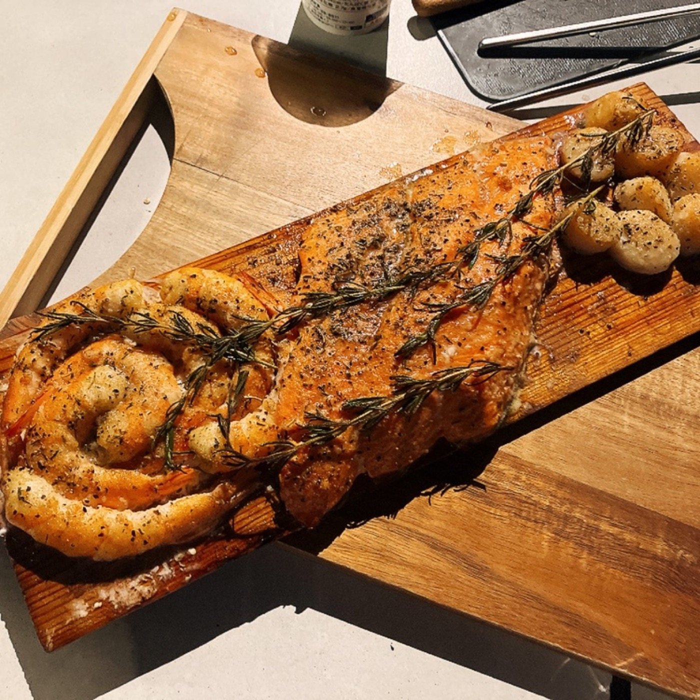
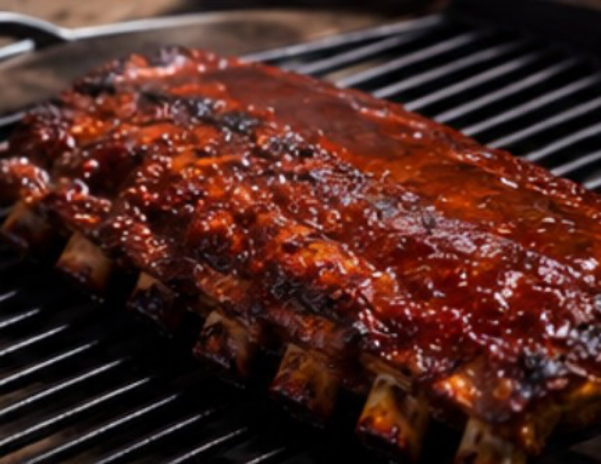
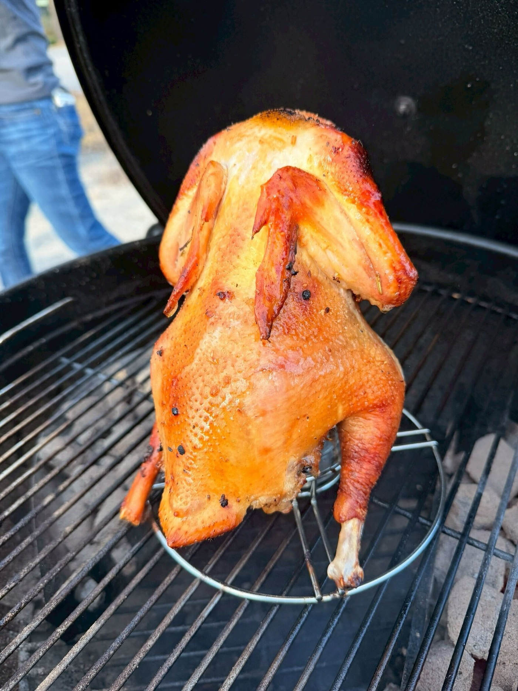
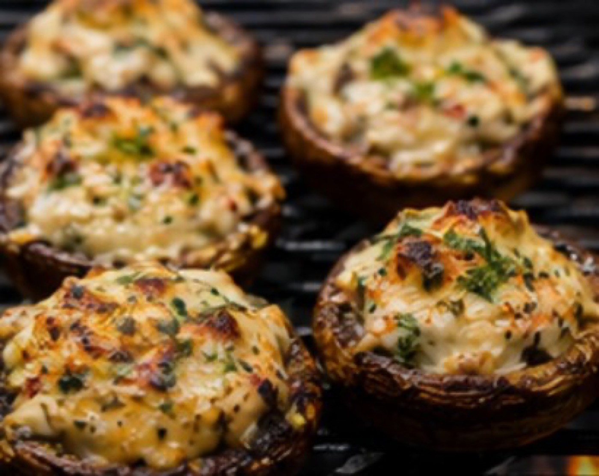
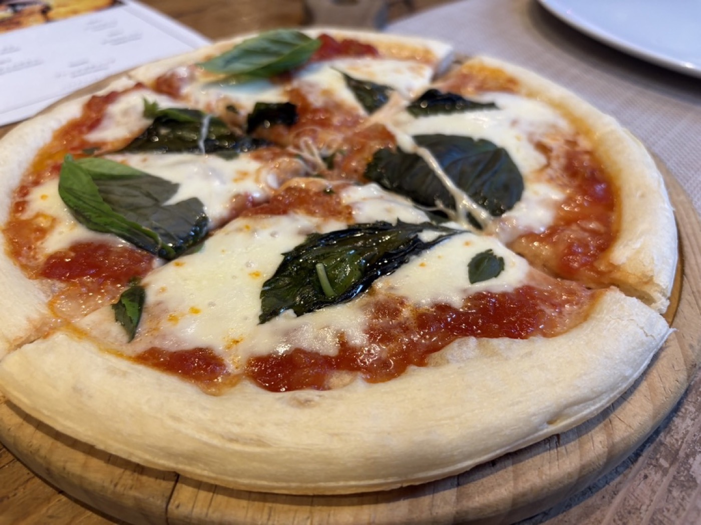
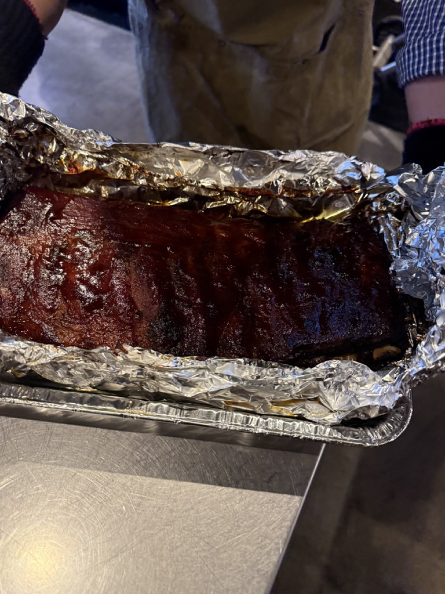
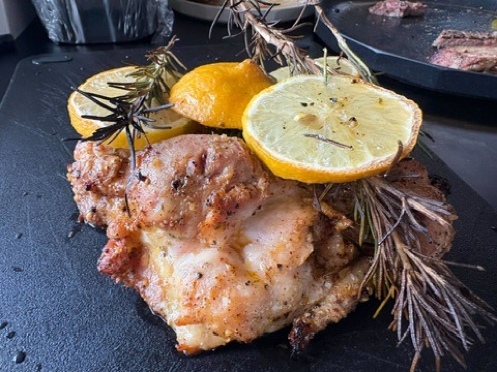
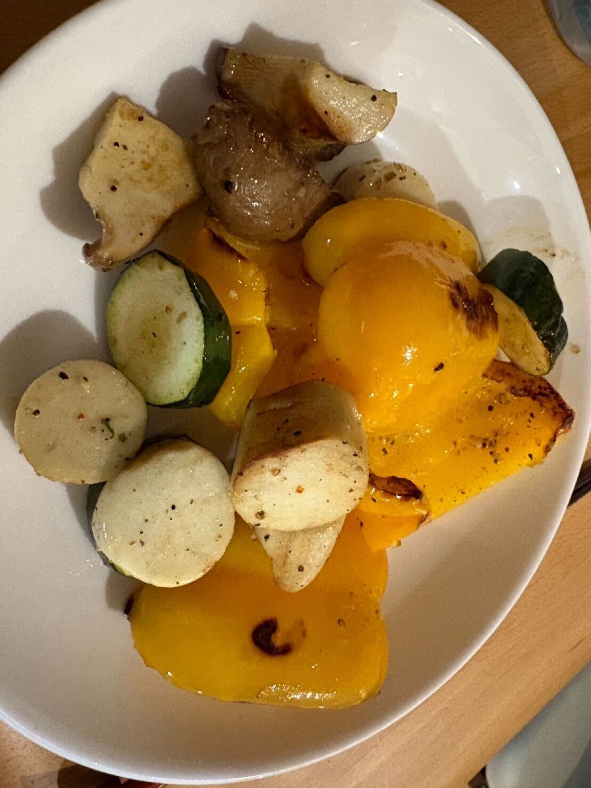
📓 グリリストのフィールドノート — 振り返りから生まれた実戦知
- 仕込みは最初にいっぺんに。都度仕込むと追いつかない。仕込みを固めてから「焼く」に専念すると、当日が劇的にスムーズになる。
- ローズマリーとレモンは万能。野菜や鶏肉と一緒に焼くと「神」。特に野菜の味変に効く。
- ラブたっぷりの肉はインダイレクトで。ダイレクトだとスパイスが先に焦げる。焦げたら退避、が正解。
- グリル付属の温度計を信じすぎない。表示を信じて焦がした経験あり。プローブの実測がいちばん信頼できる。
- メニューは肉・魚・野菜＋「あと2品」。ボルシチのような汁物や、デザート（ブレッドプディング・アップルパイ）を持っておくと場が完成する。
※Weber Grill Academy（初級2025.12／中級2026.1／上級2026.4）の受講記録と、毎回のBBQ実践の振り返りノートから編纂。月1BBQやイベントでは、この内容を実際に焼きながらお伝えしています。もっと深く知りたい方は料理ガイドとCOOK LOGへ。
LECTURE — 出張バーベキュー講座
2026年・年内の講座予定
このACADEMYの内容を、実際に火を入れながらお伝えする講座を年内に開催します。火の配置・温度の科学・杉板まで、その日から使える形で持ち帰っていただきます。日程・会場は決まり次第、コミュニティLINEでいちばん最初にご案内します。
FINAL — BBQソムリエ検定（模擬）
7問クイズで、今日の学びを確かめよう。
6問以上正解なら、あなたはもう「BBQソムリエ」への一段目に足をかけています。